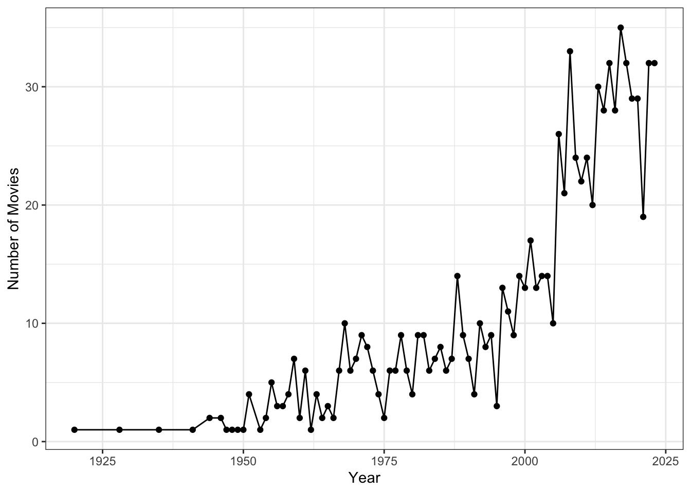

# snippet of the code which involves data cleaning
summer_movies <- summer_movies %>%
drop_na() %>%
distinct() %>%
mutate(genres = str_to_lower(genres))Analysis of Trends,Genres and Popularity

Summer-themed movies have long captivated audiences with their blend of fun, adventure, and emotional storytelling, shaping cultural trends during the summer months. From blockbuster hits to indie gems, these films encapsulate the magic of the season, whether through light-hearted comedies or dramatic tales of self-discovery. This analysis dives into IMDb data to uncover and explore key trends in the production, genre distribution, and audience reception of summer-themed movies. The goal is to uncover how these films have evolved over time and how they resonate with modern audiences.
Real-World Relevance
The rise of documentaries and biographical films in the summer movie space mirrors broader trends in the film industry, where audiences are increasingly looking for authentic and educational content. This shift could also reflect the impact of streaming services, which offer more diverse viewing options, allowing for greater flexibility in summer entertainment choices.
Data Description
Source of Data: The data comes from IMDb, available via TidyTuesday (2024) (dataset released on July 30, 2024).
Description of Variables in the Dataset:
The dataset gives us a snapshot of summer-themed movies, including their
titles,release years, andformats(like whether it’s a movie, video, or tvMovie). It also tracks audience engagement throughIMDb ratingsand thenumber of voteseach movie received. You’ll find theruntimefor each film and up to three genres attached to each title, allowing for a deeper dive into genre trends.Another dataset focuses on the specific
genresfor each movie, helping paint a clearer picture of how different types of films stack up.
Data Cleaning Steps:
Handled Missing Values: Identified and addressed missing data entries to ensure completeness and accuracy in the analysis.
Removed Duplicates: Checked for and eliminated any duplicate records to avoid over-representation of movies in the dataset.
Standardized Genre Formats: Cleaned and standardized genre entries to ensure consistency, allowing for accurate genre analysis and visualization.
Filtered Out Irrelevant Data: Removed movies with less than 10 IMDb votes to focus on titles with sufficient audience engagement.
Converted Data Types: Ensured all columns, such as
yearandruntime_minutes, were in the correct data format (integer or character) for proper analysis.
You might be wondering, why all the fuss about cleaning the data? Well, it’s the backbone of any solid analysis! To kick things off,any rows with missing values were removed, resulting in a cleaner and more complete dataset. Duplicate records were eliminated to maintain data integrity, and genre formats were standardized by converting them to lowercase for consistency. These steps ensured that the analysis was free from inconsistencies and could accurately reflect trends in summer-themed movies.
Analysis
Let’s dive into the trends and insights we uncovered.
Trend in Summer Movie Production

We can observe a surge in the production of summer-themed movies during the 1980s and 1990s in Figure 1, suggesting that this period was a golden era for summer films. While the trend fluctuated in the following years, it remains a popular genre with consistent releases. The steady rise in summer-themed movie production from the mid-20th century onwards suggests the growing cultural significance of these films. This aligns with the problem of exploring how summer-themed movies have evolved to become a mainstay in the film industry.
The data also reveals a steady increase in the number of summer-themed movies produced over the decades, particularly from the mid-20th century onward. This rise in production can be attributed to several factors:
- Post-War Boom: After WWII, the movie industry took off, and summer became the go-to season for escapist films, offering audiences a mix of adventure and relaxation.
1960s-1970s Cultural Shifts: During this time, films started focusing on youth, rebellion, and exploration, with summer releases capturing that vibe of freedom and adventure.
1980s-1990s Blockbuster Era: Huge hits like Jaws and Star Wars defined the era, paving the way for high-budget summer movies aimed at families and young audiences during school vacations.
Family Films Surge: From the ’90s onwards, summer vacations became the perfect time for studios to release family-friendly flicks, especially animated movies and lighthearted comedies.
Streaming & 2000s Shift: With the rise of streaming, movies can be released year-round, but summer is still the prime time for major blockbuster releases that draw big audiences.
Niche Films Growth: Indie films, documentaries, and biopics are also finding their place during the summer, as streaming and other platforms allow for more diverse movie options.
Globalization: Summer movie releases are now a global event, with markets like China and India contributing to the rise in summer film production.
Genre Analysis
Drama and comedy take the lead as the most popular genres in summer-themed films followed by romance and documentaries in Figure 2. However, the emergence of genres like family and horror, though less prevalent, suggests that there is a niche audience for these films. Interestingly, documentaries also perform well in this dataset, showing that audiences are seeking more than just light-hearted entertainment in the summer—they are also drawn to educational or thought-provoking content.
This insight is key to addressing the issue of how different genres resonate with audiences over time highlighting how summer-themed films often revolve around emotionally charged narratives, offering the audience an experience of personal growth, adventure, and fun-filled moments that are often associated with the season.
Ratings and Popularity
| Movie Title | Genres | Average Rating |
|---|---|---|
| Summer Nude '13: Making Movie | Documentary,Short | 9.8 |
| Summer Intensive | Biography | 9.4 |
| Kasabian Summer Solstice | Music | 9.4 |
| Endless Summer: 30 Years of Home and Away | Documentary | 9.2 |
| A Midsummer Night's Dream | Drama | 9.1 |
| The Rite of Summer | Comedy,Drama | 9.1 |
| Five Seconds of Summer: How Did We End Up Here? Live at Wembley Arena | Music | 9.0 |
| Summer Soul, Sunshine Patriot, and the American Message | Documentary | 9.0 |
| The Wilder Summer | Comedy,Family | 8.9 |
| The Summer Help | Documentary | 8.9 |
The Table 1 showcases the diverse range of top-rated summer-themed movies, which span across genres like documentaries, drama, music, and comedy. While lighthearted genres such as comedy and family films remain popular, the high ratings for more serious genres—particularly documentaries—highlight the broad appeal and evolving nature of summer-themed storytelling.
The connection between higher ratings and documentaries suggests that audiences are increasingly drawn to more substantive content, a finding that ties back to the broader problem of exploring how audience reception has evolved.
Conclusion
This analysis looked at the trends in summer-themed movies, from what genres are the most popular to how audiences respond to them. The results show that drama and comedy still dominate, but there’s an increasing variety of genres making their mark. As audience tastes continue to change, it’ll be interesting to see how future summer movies adapt. There’s also plenty of room to explore how things like marketing and release timing impact a movie’s success and reception with viewers.
The analysis highlights evolving trends in summer-themed movies, with dramas and comedies continuing to dominate while documentaries are steadily gaining popularity. According to Limited (2024) the bandwagon effect plays a significant role, as more popular movies tend to attract higher ratings, reflecting broader audience trends. The bandwagon effect suggests that well-rated films tend to gather momentum and achieve higher popularity, further solidifying their place in the summer movie canon. The correlation between high ratings and specific genres, like documentaries, emphasizes how movies that capture larger audiences benefit from increased visibility and momentum, leading to even better ratings. This phenomenon solidifies their place in the summer movie lineup, making them stand out in an increasingly diverse cinematic landscape.
In conclusion, summer-themed movies continue to offer a rich mix of genres, from feel-good comedies to thought-provoking documentaries. Their ability to engage a wide audience underscores their cultural relevance, with trends pointing towards an ever-expanding genre diversity that keeps the summer movie tradition alive.
References
Limited, Ampere Analysis. 2024. “Seasonal Changes in the Genres of Box Office Releases.” https://www.ampereanalysis.com/seasonal-changes-in-the-genres-of-box-office-releases.
TidyTuesday. 2024. GitHub. https://github.com/rfordatascience/tidytuesday/blob/master/data/2024/2024-07-30/readme.md.